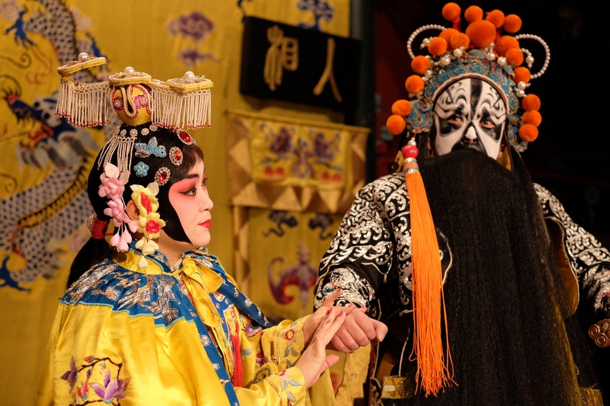
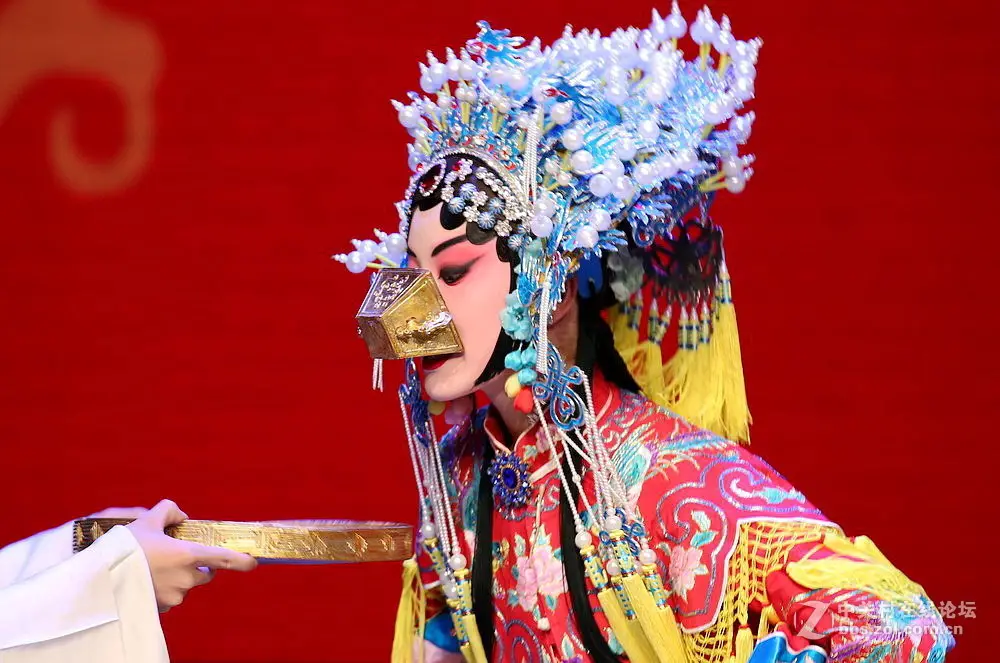
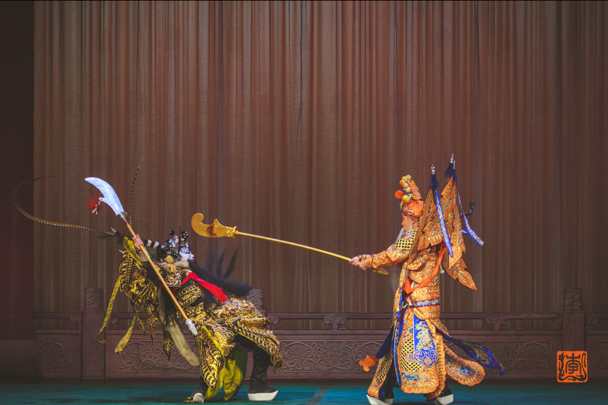
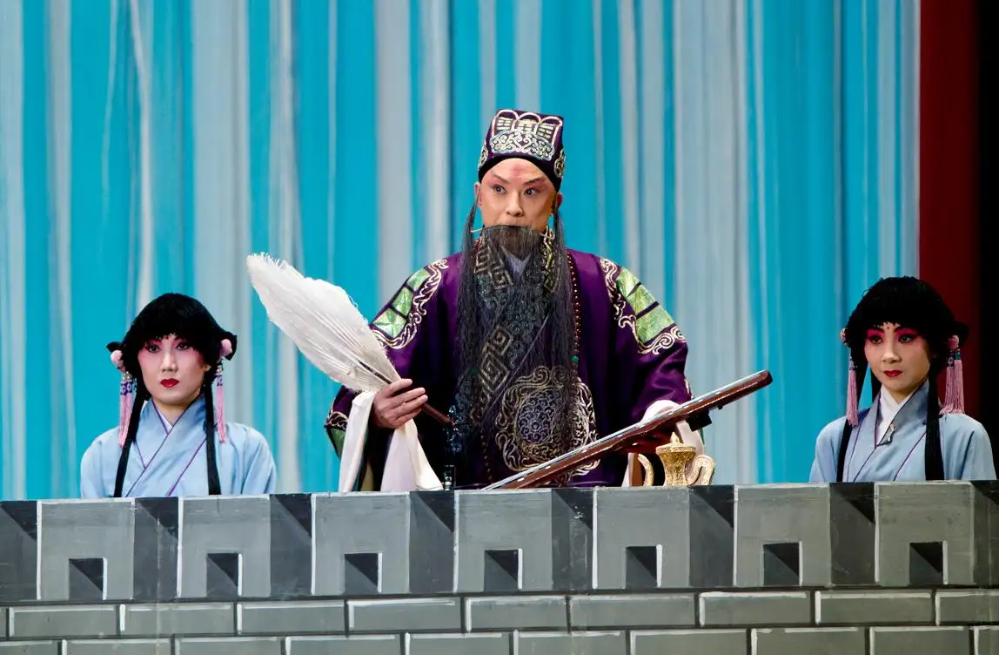

京剧经典曲目
五大名曲

《霸王别姬》
《霸王别姬》是京剧艺术大师梅兰芳表演的梅派经典名剧之一。主角是西楚霸王项羽的爱妃虞姬。清逸居士根据昆曲《千金记》和《史记·项羽本纪》编写而成。总共四本，《九里山》《楚汉争》《亡乌江》《十面埋伏》。1918年，由杨小楼、尚小云在北京首演。1922年2月15日，杨小楼与梅兰芳合作。齐如山、吴震修对《楚汉争》进行修改，更名为《霸王别姬》。
剧情：
刘邦和项羽相约以鸿沟为界，各自罢兵。项羽有勇无谋，刚愎自用，不纳忠言。汉军元帅韩信善用兵，一面命李左车诈降项羽，诓其进兵；一面在九里山下安排十面埋伏，终困项羽于垓下。项羽突围不得，愁闷饮酒，醉卧帐中。虞姬巡营，听得四面楚歌，急告项羽。项羽疑楚军皆已降汉，抚爱骑乌骓马长叹。为解君忧，虞姬拔剑起舞，慷慨悲歌。汉军攻至，虞姬恐误项羽而自刎。项羽杀出重围，迷路，自刎乌江。汉遂灭楚，夺得天下。
《白蛇传》
《白蛇传》是中国戏曲名剧，故事初见明·冯梦龙著《警世通言》（卷二十八）《白娘子永镇雷峰塔》。明人陈六龙编《雷峰塔传奇》。清人著有《义妖传》弹词。全国几乎所有的剧种，甚至包括木偶戏、皮影戏都有《白蛇传》的演出。
剧情：
在峨眉山修炼了千年的白蛇、青蛇化作白素贞和小青来到西湖，巧遇许仙扫墓归来。邂逅相遇，白素贞与许仙结成佳偶。法海和尚从中破坏，许仙听信了他的挑拨，于端阳节用雄黄酒灌醉白素贞现出蛇形，吓坏了许仙。白素贞醒来，去仙山盗来灵芝，将许仙救活。许仙病愈，又被法海诱上金山，白素贞偕小青到金山索夫，法海不放。白素贞被迫反抗，大战金山寺。许仙逃离金山寺，与白素贞于西湖断桥边相见，白素贞不计旧怨，一同到许仙姐姐家中，重整家园。法海又来破坏，小青败走，白素贞被压于雷峰塔下。若干年后，小青搬来众仙，击败塔神，推倒雷峰塔，为白素贞报仇雪恨。

《贵妃醉酒》
京剧《贵妃醉酒》又名《百花亭》，是一出单折戏，取材于中国唐朝历史人物杨贵妃的故事，经过中国著名京剧表演艺术家梅兰芳先生创作、表演而广为人知，是梅派代表剧目之一。《贵妃醉酒》通过动作和唱词、曲调，表达杨贵妃由期盼到失望，再到怨恨的复杂心情。
剧情：
唐玄宗先一日与杨贵妃约，命其设宴百花亭，同往赏花饮酒。至次日，杨贵妃遂先赴百花亭，各齐御筵候驾，但是，唐玄宗车驾竟久候不至。乃忽报皇帝已幸江妃宫（江妃即梅妃，江采萍）。杨贵妃闻讯哀怨自伤，借酒浇愁。

《定军山》
《定军山》是依据《三国演义》第70回“……老黄忠计夺天荡山”和第71回“占对山黄忠逸待劳……”改编的京剧传统剧目。讲述：三国时魏蜀交战，曹操派大将张郃攻打葭萌关，被蜀汉老将军黄忠、严颜打败。
剧情：
张郃逃到定军山，投奔夏侯渊，准备共同对抗蜀军。诸葛亮为增加黄忠取胜的信心，假意说黄忠年纪太大，打不过夏侯渊，准备换人出战。黄忠听了很是生气，称自己年龄虽大但力气不减当年，并立下军令状，发誓十日内攻下定军山。诸葛亮见激将法成功，便欣然同意黄忠出战。两军交战中，夏侯渊把黄忠的部将陈式擒去，而黄忠也生擒了夏侯渊的侄子夏侯尚。于是双方商定，在两军阵前互换人质。可当夏侯渊放回陈式后，黄忠却将夏侯尚射死，激得夏侯渊出阵较量。黄忠又施展拖刀计，斩杀夏侯渊，夺取了定军山。
